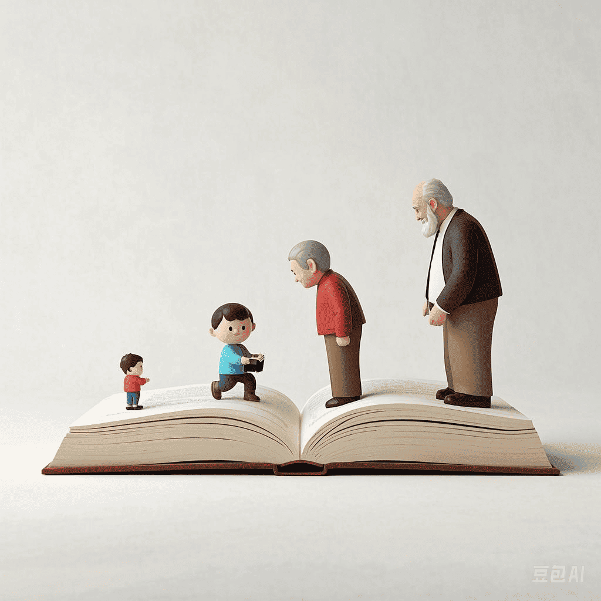

回忆录广场
探索他人的生活故事，获取创作灵感

阅读全文
弄堂琴声：永不消逝的旋律
那年立夏，阳光透过弄堂的缝隙，洒在石板路上，暖烘烘的。父亲的三轮车吱吱呀呀地驶了进来，车斗里是一架旧立式钢琴...
家庭推荐：
周晓芸（女儿）："母亲的回忆录让我重新'看见'了她的青春。那些模糊的往事变得鲜活立体..."
东北列车员的三尺票台
北方的冬天，车站里透着寒意，售票窗口的玻璃上结了一层薄霜。我把手在袖子里搓了搓，继续敲击键盘...
家庭推荐：
李晨光（儿子）："父亲的回忆让我对他的工作有了新的认识。从小只觉得他每天在售票窗口忙碌..."
迁徙之路
1969年冬天，我和一群同龄人背着简单的行囊，登上了南下的列车。那时，我们怀揣着'到农村去、到边疆去'的激情，可现实却远比想象中艰难...
家庭推荐：
王志明（儿子）："父亲的经历让我对那个年代有了更深的理解。从小听他说起知青下乡的故事..."
老年人的爱情
秋日的阳光透过窗户洒进房间，温暖而宁静。我和老伴坐在窗边，手中拿着一张泛黄的照片，那是我们年轻时的合影...
家庭推荐：
张立波（儿子）："父母的爱情故事让我对他们的关系有了新的认识。从小只觉得他们彼此关心..."
孩子的成长岁月
孩子出生那天，医院的产房里弥漫着紧张与期待的气息。当听到婴儿的第一声啼哭时，我的心仿佛被点亮了...
家庭推荐：
林小勇（儿子）："母亲对孩子的关怀让我深受感动。从小只觉得她总是忙碌于家务..."